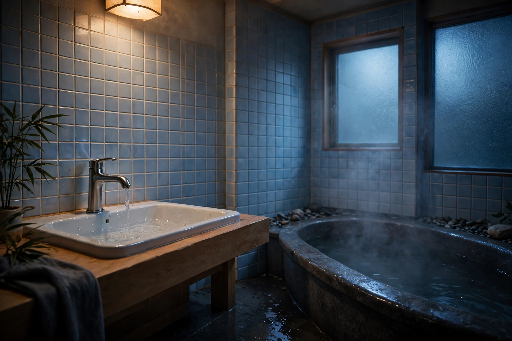

📊 Hzの目安
水の音の帯域は、配管の種類や水の流れ方、建物の構造によって大きく変わります。あくまで目安として、水が流れる音は中音域から高音域まで広がることが多く、配管を伝わる振動は低音域に感じられることもあります。単一のHzの数字で決めつけることはできません。気になる音の感じ方に近い、一定の音から控えめに試してみてください。
この記事でHzをひとつに絞らないのは、水の音が「流れる音（中～高音域）」と「配管の振動（低音域）」の混ざり合いで、どちらが目立つかが家ごとに違うためです。水の音用の動画は、流れる音のほうに合わせたピンクノイズ 200～4000Hz です。振動のほうが中心に感じる場合は、機械音の記事の音（40～1000Hz）のほうが合うこともあります。
20Hz200～4000Hz5000Hz
この記事の要点
- 水の音は、急に始まって、しばらく続いて、急に止まることが多い音です。その「始まり」と「終わり」の落差が、気になりやすさの中心です。
- 排水の「流れる音」、給水の「サーという音」、配管の「振動や衝撃音」では、響き方も対策の効き方も変わります。
- マスキング音は、音の始まりの落差を小さくするためのものです。音量を上げれば解決する、というものではありません。
- 水の音用の8時間動画は、ピンクノイズ 200～4000Hz です。
- 普段と違う大きな音・振動・頻繁すぎる音は、マスキングで我慢する前に、管理会社への相談を検討する種類の音です。
⏱ 急いでいる人へ ― 今夜やること3つ
📖 目次
🚿 水の音の正体 ― 3種類の音
「水の音」とひとくくりにされますが、中身は3種類に分かれます。自分の気になっている音がどれかで、効く対策が変わります。
| 排水の音 | 給水の音 | 配管の振動・衝撃音 | |
|---|---|---|---|
| 音の例 | ジャー、ゴボゴボ | サー、シャー | ブーン、ドン |
| 正体 | 排水管を水が落ちていく音 | シャワーや蛇口を流す音 | 配管や壁を伝わる振動、急な開閉による衝撃 |
| 続く時間 | 数十秒～数分 | 使っている間ずっと | 一瞬、または共鳴の間 |
| マスキング | 落差を縮める方法が比較的合う | 一定の音同士で合わせやすい | 紛らわせにくい。設備側の可能性も |
排水管は、パイプスペース（PS）と呼ばれる壁の中の縦空間を通って、各階を貫いています。だから水の音は「上の階から」というより「壁の中から」聞こえることが多く、出どころが見えない分、部屋全体に響くように感じます。
なぜ気になるのか
水の音は、急に始まって、しばらく続いて、急に止まることが多い音です。静かな夜には、そうした変化が耳に入りやすく、気になりやすいと言われます。配管の位置や建物の構造によって、聞こえ方は変わります。
気になり方を強くする要素は、主に次の点です。
- 始まりが予測できないこと ― 一定に続く音には耳が慣れていきますが、「無音から急にジャー」という始まりは、そのたびに注意を引きます。止まる瞬間も同じで、終わりの落差でもう一度気になってしまいます。夜間は部屋の背景音（暗騒音）が下がっているため、この落差が昼よりずっと大きくなります
- 壁の中から聞こえること ― 排水管はパイプスペース（PS）を通っていることが多く、音の出どころが見えない分、逃げ場がないように感じます
- 衝撃音が混ざることがあること ― 蛇口を急に閉めたときなどに「ドン」と配管が鳴る現象（ウォーターハンマーと呼ばれます）が起きることがあります。流れる水の勢いが急に止められることで圧力が跳ね上がり、配管を叩くような音になる現象で、水の音というより衝撃音として驚かされます
🎧 マスキング音の考え方
急に始まる音は、ずっと一定のマスキング音でも、完全に紛れさせることが難しい場合があります。考え方としては、マスキング音で部屋の「背景の音」を少しだけ持ち上げておくことで、水の音が始まったときの落差を小さくする、というものです。無音の部屋に急に始まるから目立つのであって、背景が少し持ち上がっていれば、同じ水の音でも「変化」として小さくなります。だから音量を上げれば解決する、というものではなく、控えめな音量で一定の音を流し、気になり方が少し和らぐかどうかを確かめるのが基本です。音そのものを消すものではありません。
🚿 音の種類ごとの目安
排水の音（トイレ・お風呂の排水）
「ジャー」「ゴボゴボ」という流れる音です。排水管を水が落ちていく音なので、真下や配管の近くで聞こえやすく、時間は数十秒から数分程度で終わることが多いです。トイレの排水は一回ごとに短く、お風呂の排水は長めに続きます。一定のマスキング音で落差を縮める方法が、比較的合います。
給水の音（シャワー・蛇口）
「サー」という連続音です。使っている間ずっと続くため、水の音の中では長めです。音自体も一定に近いので、マスキング音との相性は悪くありません。深夜のシャワーは時間帯の問題として、管理会社への相談材料になることもあります。
配管の振動・衝撃音
「ブーン」という共鳴や、「ドン」という衝撃音です。こちらは水の流れる音というより、配管や壁を伝わる振動の要素が強く、マスキングでは紛らわせにくい種類です。頻繁に起きる、以前より大きくなった、という場合は設備側の問題の可能性もあるため、次の「効きにくいと感じたら」にあるように、我慢より先に相談を検討してください。
🎧 8時間のマスキング音
水の音用に、ピンクノイズ 200～4000Hz の8時間動画を用意しています。就寝前に控えめな音量で流し始めて、水の音が始まる落差がどのくらい和らぐか、試してみてください。
🎛 効かせるための使い方
「落差を縮める」が目的
水の音の対策は、ほかの音と少し考え方が違います。音が鳴っている間を隠すのではなく、鳴り始めの瞬間の落差を小さくすることが目的です。だから、就寝前から控えめな音量で流し始めておくことが大切で、水の音が鳴ってから慌てて再生しても効果は薄くなります。
音量の決め方
「部屋に何か音が流れているな」と感じる最小の音量から始めてください。水の音の始まりが「少し和らいだ」と感じる程度が目安です。それ以上上げても、始まりの落差はゼロにはなりませんし、マスキング音自体で眠れなくなります。
振動が中心なら、音を替える
「ドン」「ブーン」という振動や衝撃が中心に感じる場合は、水の音用のピンクノイズ（200～4000Hz）では帯域が合いません。機械音用の音（40～1000Hz）も試してみてください。それでも合わない場合は、マスキングの対象ではなく設備側の問題である可能性が上がります。
🔁 効きにくいと感じたら
水の音は、マスキングが難しい部類の音です。「効かない」と感じたら、次の順で見直してみてください。
- 正直な前提として ― 始まりと終わりの落差そのものは、一定のマスキング音では完全には消せません。「気になり方が少し和らぐか」が、この方法の現実的な目標です
- 耳栓と併用する ― 耳栓で水の音の輪郭を少し弱めてから、マスキング音で紛れさせる組み合わせです（耳栓とマスキング音の併用）
- 音の種類を見直す ― 「ドン」という衝撃音や「ブーン」という振動が中心なら、マスキングの対象というより、設備や使い方の問題である可能性があります
- 管理会社に相談する ― 普段と違う大きな音、振動、水漏れの疑い、深夜に頻繁すぎる音は、マスキングで我慢を続ける種類のものではありません。いつ・どのくらいの頻度かという記録があると、相談が進みやすくなります（騒音の記録シート）
📏 自分の部屋の音を測ってみる
水の音は短時間で終わるため、「気のせいかも」と思ってしまいがちです。ブラウザで使えるWeb版の測定器で、音がした時刻とおおよそのレベルを残しておくと、頻度のパターンが見えてきます。管理会社に相談する場合も、感覚ではなく記録があるほうが話が早くなります。
スマートフォンのマイクは低い音を拾いにくいため、配管の振動のような低音は実際より小さく表示される傾向があります。数値は目安として使い、日時と頻度と合わせて残すのがおすすめです（騒音測定アプリの使い方と限界）。
🚫 やってはいけないこと
- 水漏れのサインを「生活音」だと思って放置する ― 普段と違う音が続く、壁や天井に染みがある、といった場合は、水の音の悩みではなく設備の異常かもしれません。早めに管理会社へ
- 自分の家の配管音を確認せずに放置する ― 自分の蛇口の閉め方や給湯器の音が、下の階にとっての「水の音」になっていることもあります。急に閉めずにゆっくり閉めるだけでも、ウォーターハンマーは起きにくくなります（自分の音が気になる場合は自分の音の対策へ）
- 深夜の水音に、天井を叩いて抗議する ― 相手には意図が伝わりません。伝える場合は管理会社を通じてが原則です
❓ よくある質問
- Q. トイレの流れる音が、特に響くのはなぜですか？
- A. トイレの排水は一度に大量の水が縦の排水管を落ちていくため、音が大きく、配管を通って階下に届きやすいからです。排水管が通るパイプスペースが寝室の壁の裏にあると、余計に近く感じます。
- Q. 「ドン」という音（ウォーターハンマー）は、故障ですか？
- A. 蛇口を急に閉めたときに起きる現象で、それ自体は故障とは限りません。ただし、頻繁に起きる・以前より大きくなった・何もしていないのに鳴る、といった場合は、配管や器具の状態の問題も考えられます。マスキングで隠す対象ではないので、管理会社への相談をおすすめします。
- Q. 深夜のシャワーの音は、我慢するしかないのですか？
- A. 生活の時間帯は人それぞれで、このサイトが「何時までなら良い」と判断することはありません。ただ、深夜に連日続いて睡眠に支障が出ているなら、それは感覚の問題ではなく生活への影響の問題です。時刻と頻度の記録を付けて、管理会社に相談する段階だと考えてください。
- Q. 測定アプリで測ると、水の音が小さく表示されます
- A. スマートフォンのマイクは低い音を拾いにくく、配管の振動成分は実際より小さく出る傾向があります。数値の絶対値ではなく、「何時に・何回」という頻度の記録として使うのがおすすめです。
⚠️ 注意
水漏れや、普段と違う大きな音、振動が疑われる場合は、早めに管理会社への相談をご検討ください。このサイトは、配管の修理や点検のアドバイスをするものではありません。